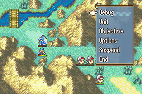
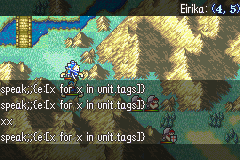

Debugger
The debug screen is accessible via the debug menu item (in the on-map option menu - the one which normally contains UNITS, OPTIONS, END TURN, etc.), if launching the game in debug mode.
If not, the debug screen is still accessible via the same menu, but the player must enter the following code, using directional input keys, to open it: UP, UP, DOWN, DOWN, LEFT, RIGHT, LEFT, RIGHT.


The debug screen calls a miniature event when you enter a command. That event has access to:
unit: the unit under the cursor
position: the position under the cursor
You can see these values displayed on the top right corner of your screen, as seen in the above screenshot. No unit will be displayed when not hovering over a unit.
While in this menu, you may type in any event command and hit Enter to have that event command be immediately executed. Try out give_item;Eirika;Vulnerary as an example.
To exit the Debug menu, press Enter while there is no text in the debug command line. Do not press Escape or your game window will close entirely.